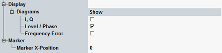

Display and Marker Tab
The tab contains mainly "Display" parameters, configuring the appearance of the measurement menu and selecting the displayed results.

Display and Marker tab
Switches between "Level / Phase" and "I, Q" representation, and shows or hides the frequency error diagram, see "Measurement Results".
Selects the slot to where the marker is positioned.